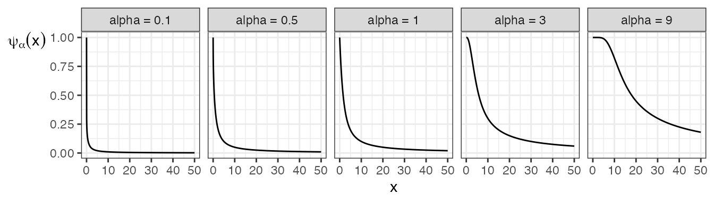
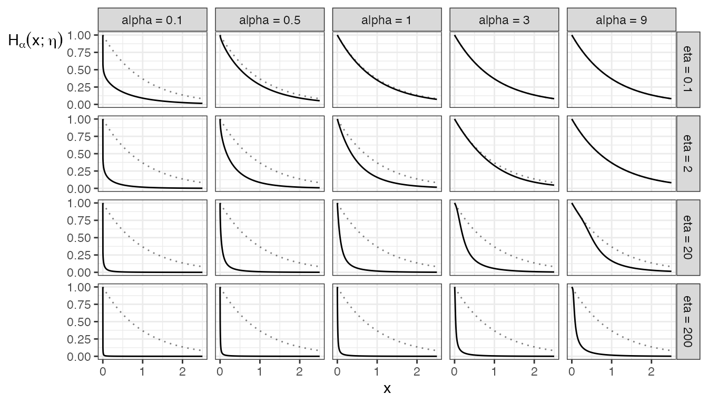

Formulas.RmdThe IG and IGL copula families (short for “Integrated Gamma” and “Integrated Gamma Limit”) copula families are special cases of a wider class of copulas, and most of the formulas for IG and IGL copula quantities don’t simplify from their more general form. - The IGL copula family is a special case of a class of copulas first defined by Durante and Jaworski (2012) (hence is referred to as the DJ copula class). - The IG copula family is a special case of an interpolated version of the DJ copula class, first described by Coia (2017).
We’ll start with formulas for a general DJ copula and its interpolated copulas, and end with formulas specific to the IG and IGL copula families, where relevant.
Both the DJ and the Interpolated DJ copula classes (and thus the IG and IGL copulas) are characterized by a generating function \(\psi:[0, \infty) \rightarrow (0, 1]\), which is a concave distribution function or convex survival function.
A DJ copula (and thus an IGL copula family) has cdf \[C_{\text{DJ}}(u, v; \psi) = u + v - 1 + (1 - u) \psi\left((1 - u) \psi^{\leftarrow}(1 - v)\right),\] for \((u, v)\) in the unit square, where \(\psi^{\leftarrow}\) is the left-inverse of \(\psi\).
But, this class does not contain the independence copula, so we can introduce an interpolating parameter \(\theta \geq 0\) such that \(\theta = 0\) results in the independence copula, and \(\theta = \infty\) results in the DJ copula class – hence interpolating DJ copulas with the independence copula.
An interpolated DJ copula (and thus an IG copula) has cdf \[C_{\text{intDJ}}(u, v; \theta, \psi) = u + v - 1 + (1 - u) H_{\psi}\left(H_{\psi}^{\leftarrow}(1 - v; \theta); (1 - u) \theta \right)\] for \((u, v)\) in the unit square, where \(H_{\psi}\) is the interpolating function of \(\psi\), defined as \[H_{\psi}(x; \eta) = e ^ {-x} \psi(\eta x)\] for \(x > 0\) and \(\eta \geq 0\), and has a range between 0 and 1. Its derivative (with respect to the first argument) is also useful: \[\text{D}_1 H_{\psi}(x; \eta) = - e ^ {-x} (\psi(\eta x) - \eta \psi'(\eta x)).\]
Although the DJ copula class can be considered part of the Interpolated DJ class if we include \(\theta = \infty\) in the parameter space, the formulas when \(\theta = \infty\) do not simplify in an obvious way, so it’s best to treat the two classes separately.
All formulas in this vignette can be found in Coia (2017), but under a different (and more complex) parameterization: the \(\psi\) function is \(\psi(1/x)\) and the \(H\) function is \(H_{\psi}(x; \theta) = \frac{1}{x} \psi(1 / (\theta \log x))\), and the copula formulas are correspondingly slightly different.
Besides \(H_{\psi}\), another transformation of \(\psi\) is necessary for writing formulas succinctly: \[\kappa_{\psi}(x) = \frac{\text{d}}{\text{d}x} x \psi(x) = \psi(x) + x \psi'(x)\] for \(x > 0\).
By the way, not all choices of \(\psi\) result in valid DJ / Interpolated DJ copulas – the requirement has to do with the \(\kappa\) function. So, in case you want to go in the opposite direction, and obtain \(\psi\) from a choice of \(\kappa\), we can do so by solving the differential equation in the definition of \(\kappa\), to get \[\psi(x) = \frac{1}{x} \int_{0}^{x} \kappa(t) \text{d}t.\]
To simplify formulas, denote \(y = \psi^{\leftarrow}(1 - v)\). Throughout, \(p\), \(u\), and \(v\) are numbers between 0 and 1.
The density of a DJ copula (and thus an IGL copula) is \[c_{\text{DJ}}(u, v; \psi) = (1 - u) \frac{\kappa_{\psi}'((1 - u) y)}{\psi'(y)}\]
The two families of conditional distributions, obtained by conditioning on either the 1st or 2nd variable, are \[\begin{equation} \begin{split} C_{\text{DJ}, 2 | 1}(v | u; \psi) & = 1 - \kappa_{\psi}((1 - u) y); \\ C_{\text{DJ}, 1 | 2}(u | v; \psi) & = 1 - (1 - u) ^ 2 \frac{\psi'((1 - u) y)}{\psi'(y)}. \end{split} \end{equation}\] The corresponding quantile functions are the (left) inverses of these functions, for which the 2|1 quantile function has a closed form: \[C_{\text{DJ}, 2 | 1}^{-1}(p | u; \psi) = 1 - \psi\left((1 - u) ^ {-1} \kappa_{\psi}^{\leftarrow}(1 - p) \right)\]
To check these equations, note that \(\frac{\text{d}y}{\text{d}v} = - 1 / \psi'(y)\). If comparing to the formulas from Coia (2017) Section E.1.2, note that the formulas there are defined for the copula reflections.
To simplify formulas, denote \(y = H_{\psi} ^ {\leftarrow}(1 - v; \theta)\). Throughout, \(p\), \(u\), and \(v\) are numbers between 0 and 1.
The density of an interpolated DJ copula (and thus an IG copula) is \[\begin{equation} c_{\text{intDJ}}(u, v; \theta, \psi) = \frac{\text{D}_1 H_{\kappa_{\psi}}(y; (1 - u) \theta)} {\text{D}_1 H_{\psi}(y; \theta)} \end{equation}\]
The two families of conditional distributions, obtained by conditioning on either the 1st or 2nd variable, have a convenient form if we consider the interpolating function \(H\) of the \(\kappa\) function instead of the \(\psi\) function: \[\begin{equation} \begin{split} C_{\text{intDJ}, 2 | 1}(v | u; \theta, \psi) & = 1 - H_{\kappa_{\psi}}\left(y; (1 - u) \theta \right) \\ C_{\text{intDJ}, 1 | 2}(u | v; \theta, \psi) & = 1 - (1 - u) \frac{\text{D}_1 H_{\psi}(y; (1 - u) \theta)} {\text{D}_1 H_{\psi}(y; \theta)}\\ \end{split} \end{equation}\] The corresponding quantile functions are the (left) inverses of these functions, for which the 2|1 quantile function has a closed form: \[\begin{equation} \begin{split} C_{\text{intDJ}, 2 | 1}^{-1}(p | u; \theta, \psi) & = 1 - H_{\psi} \left( H_{\kappa_{\psi}} ^ {\leftarrow} (1 - p; (1 - u) \theta); \theta \right) \end{split} \end{equation}\]
To check these equations, note that \(\frac{\text{d}y}{\text{d}v} = - 1 / \text{D}_1 H_\psi(y; \theta)\).
The generating functions of the IG and IGL copula families rely on the Gamma(\(\alpha\)) distribution, which has cdf \[F_{\alpha}(x) = \frac{\Gamma(\alpha) - \Gamma^{*}(\alpha, x)}{\Gamma(\alpha)}\] for \(\alpha > 0\) and \(x \ge 0\), where \(\Gamma\) is the Gamma function, and \(\Gamma^{*}\) is the (upper) incomplete Gamma function defined as \[\Gamma^{*}(\alpha, x) = \int_x^{\infty} t ^ {\alpha - 1} e ^ {-t} \text{d} t.\] The density function is denoted by \(f_{\alpha}\).
To emphasize the dependence of \(\psi\), \(\kappa\), and \(H\) on the parameter \(\alpha\), this parameter is written as a subscript. The \(\psi\) function and its derivative are \[\begin{equation} \begin{split} \psi_{\alpha}(x) & = 1 - F_{\alpha}(x) + \frac{\alpha}{x} F_{\alpha + 1}(x); \\ \psi_{\alpha}'(x) & = - \frac{\alpha}{x ^ 2} F_{\alpha + 1}(x). \end{split} \end{equation}\] Here are some plots of these functions for various values of \(\alpha\). 
The \(\kappa\) function is the Gamma survival function, \[\kappa_{\alpha}(x) = 1 - F_{\alpha}(x).\]
The \(H\) function does not simplify, although for convenience, \(H_{\psi_{\alpha}}\) is simply denoted \(H_{\alpha}\). Here are some plots of these functions, compared with the plot of the negative exponential \(e^{-x}\) as the faded dotted line. Notice that increasing \(\alpha\) draws \(H_{\alpha}(\cdot, \eta)\) closer to the negative exponential, whereas increasing \(\eta\) pulls it further.
## Warning: `guides(<scale> = FALSE)` is deprecated. Please use `guides(<scale> =
## "none")` instead.
Most of the formulas for copula quantities do not simplify nicely from their general forms. But, here are the ones that do.
For the IGL copula family: \[\begin{equation} \begin{split} C_{\text{IGL}, 1 | 2}(u | v; \theta, \alpha) & = 1 - \frac{F_{\alpha + 1}((1 - u) y)}{F_{\alpha + 1}(y)}; \\ C_{\text{IGL}, 1 | 2}^{-1}(p | v; \theta, \alpha) & = 1 - \frac{1}{y} F_{\alpha + 1}^{-1}\left((1 - p) F_{\alpha + 1}(y)\right). \end{split} \end{equation}\]